Meet the Instructors

Alexander Repnikov
Ruby Association Certified Programmer with 10+ years experience in Ruby on Rails, open-source contributor, co-organizer of Ruby Warsaw Community Conference.

Sebastian Tekieli
20+ years building and scaling web and SaaS applications. Former CTO at Punkta and DataFeedWatch. Passionate about Rails, AI agents, and shipping products fast.
Hotwire Native, Explained
Hotwire Native lets you wrap your existing Rails web app in a native mobile shell, giving users a fully native experience on iOS and Android — without rewriting your app in Swift or Kotlin.
The philosophy is simple: "Content is all web. Navigation is all native." Your server renders HTML as usual. The native shell handles navigation bars, gestures, transitions, and platform-specific UI elements.
During the workshop you'll build around a Kanban Board app — built with Rails 8, Turbo Frames, Turbo Streams, Action Cable, and SortableJS drag-and-drop. The web app features boards, columns, and cards with real-time updates. We'll progressively wrap it in native iOS and Android shells, enhance it with Bridge Components, and add fully native screens.
Who is this for?
Rails developers curious about mobile. You don't need any iOS or Android experience. If you can build a Rails app with Hotwire, you already have 90% of the skills needed.
Get Ready Before You Arrive
Please complete these steps before the workshop. Installing Xcode and Android Studio can take a while, so don't leave it for the morning of!
1 Install Ruby 3.4.8
macOS
First, install system dependencies
brew install openssl@3 readline libyaml gmpOption A: rbenv (recommended)
brew install rbenv ruby-build
echo 'eval "$(rbenv init - zsh)"' >> ~/.zshrc
source ~/.zshrc
rbenv install 3.4.8
ruby --version # should show: ruby 3.4.8rbenv auto-activates Ruby 3.4.8 when you cd into a project with .ruby-version.
Option B: rvm
brew install gnupg
gpg --keyserver keyserver.ubuntu.com --recv-keys \
409B6B1796C275462A1703113804BB82D39DC0E3 \
7D2BAF1CF37B13E2069D6956105BD0E739499BDB
\curl -sSL https://get.rvm.io | bash -s stable
source ~/.rvm/scripts/rvm
rvm install ruby-3.4.8 --with-openssl-dir=$(brew --prefix)/opt/openssl@3
rvm --default use 3.4.8
ruby --version # should show: ruby 3.4.8Linux (Ubuntu / Debian)
First, install system dependencies
sudo apt update
sudo apt install -y build-essential libssl-dev libreadline-dev \
zlib1g-dev libyaml-dev libgmp-dev libffi-dev libsqlite3-devOption A: rbenv (recommended)
git clone https://github.com/rbenv/rbenv.git ~/.rbenv
echo 'export PATH="$HOME/.rbenv/bin:$PATH"' >> ~/.bashrc
echo 'eval "$(rbenv init -)"' >> ~/.bashrc
source ~/.bashrc
git clone https://github.com/rbenv/ruby-build.git ~/.rbenv/plugins/ruby-build
rbenv install 3.4.8
ruby --version # should show: ruby 3.4.8Option B: rvm
gpg --keyserver keyserver.ubuntu.com --recv-keys \
409B6B1796C275462A1703113804BB82D39DC0E3 \
7D2BAF1CF37B13E2069D6956105BD0E739499BDB
\curl -sSL https://get.rvm.io | bash -s stable
source ~/.rvm/scripts/rvm
rvm install ruby-3.4.8
rvm --default use 3.4.8
ruby --version # should show: ruby 3.4.8Troubleshooting
- Build fails on macOS? Run
brew install openssl@3 readline libyaml gmp - rbenv version not found? Run
brew upgrade ruby-buildand retry - On Linux, make sure you have
build-essentialinstalled
2 Clone & Run the Rails Application
Requires SQLite 3 and Redis.
git clone https://github.com/arepnikov/hotwire-native-workshop-rails.git
cd hotwire-native-workshop-rails
bundle install
rails db:setup
bin/devVisit http://localhost:3000 to verify it works.
3 Set Up the iOS Project (Xcode)
Requires Xcode 15+ — download from the Mac App Store.
git clone https://github.com/arepnikov/hotwire-native-workshop-ios.gitOpen the project in Xcode, let it resolve Swift Package Manager dependencies, then build and run on an iPhone simulator.
4 Set Up the Android Project (Android Studio)
Requires Android Studio — download from developer.android.com. Works on macOS, Windows, and Linux.
git clone https://github.com/arepnikov/hotwire-native-workshop-android.gitOpen the project, let Gradle sync dependencies, then run on an Android emulator.
Checklist before the workshop
- Ruby 3.4.8 installed (
ruby --version) - Rails app runs at
localhost:3000 - Xcode installed and iOS project builds on a simulator
- Android Studio installed and Android project builds on an emulator
- Git installed and all repos cloned
What We'll Build
Four modules, each building on the previous one. Follow along step by step.
MainActivity
Open java/com/example/hotwirenativeworkshop/main/MainActivity.kt.
Here we configure the backend endpoint:
MainActivity.ktoverride fun navigatorConfigurations() = listOf(
NavigatorConfiguration(
name = "main",
startLocation = KanbanBoard.current.url,
navigatorHostId = R.id.main_nav_host
)
)We use the KanbanBoard class to store remote and local URLs. Open java/com/example/hotwirenativeworkshop/KanbanBoard.kt and on line 5, change:
Environment.Remote → Environment.Local
📷 Screenshot: initial state
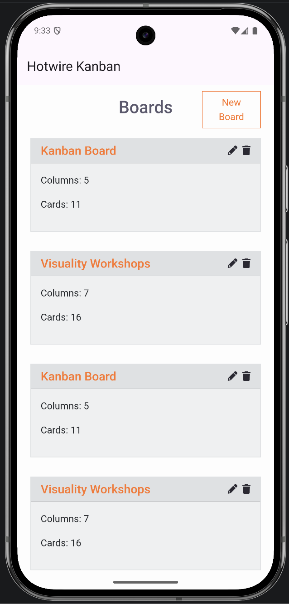
Native Title Rails
📷 Screenshots: before / after
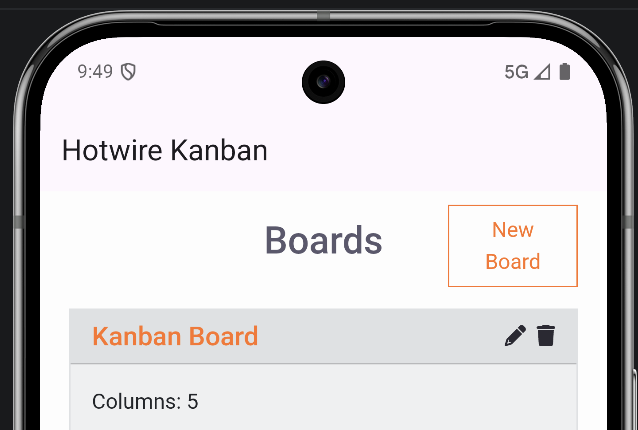
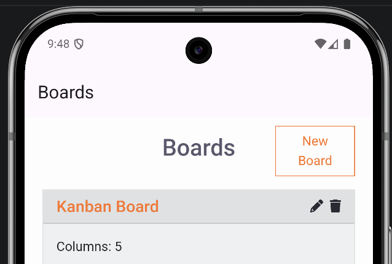
Open app/views/boards/index.html.erb and add at the top:
<% content_for :title, "Boards" if turbo_native_app? %>Optionally, update the board's show page as well:
app/views/boards/show.html.erb<% content_for :title, @board.name if turbo_native_app? %>Create ButtonComponent Android
- In the project root
com.example.hotwirenativeworkshop, create a new package:bridge. - Inside it, create a Kotlin Class/File named
ButtonComponent. - Paste the scaffold:
package com.example.hotwirenativeworkshop.bridge
import android.util.Log
import dev.hotwire.core.bridge.BridgeComponent
import dev.hotwire.core.bridge.BridgeDelegate
import dev.hotwire.core.bridge.Message
import dev.hotwire.navigation.destinations.HotwireDestination
import kotlinx.serialization.SerialName
import kotlinx.serialization.Serializable
class ButtonComponent(
name: String,
private val delegate: BridgeDelegate<HotwireDestination>
) : BridgeComponent<HotwireDestination>(name, delegate) {
override fun onReceive(message: Message) {
when (message.event) {
"connect" -> handleConnectEvent(message)
else -> Log.w("ButtonComponent", "Unknown event for message: $message")
}
}
private fun handleConnectEvent(message: Message) {
val data = message.data<MessageData>() ?: return
// Display a native submit button in the toolbar using data.title
}
private fun performButtonClick(): Boolean {
return replyTo("connect")
}
@Serializable
data class MessageData(
@SerialName("title") val title: String
)
}Register the Component Android
Open java/com/example/hotwirenativeworkshop/KanbanBoardApplication.kt and add inside configureApp:
// Register bridge components
Hotwire.registerBridgeComponents(
BridgeComponentFactory("button", ::ButtonComponent)
)Implement ButtonComponent Android
Back in bridge/ButtonComponent.kt, add these private properties at the top of the class:
private val buttonItemId = 37
private var buttonMenuItem: MenuItem? = null
private val fragment: Fragment
get() = delegate.destination.fragment
private val toolbar: Toolbar?
get() = fragment.view?.findViewById(R.id.toolbar)Add the showToolbarButton method:
private fun showToolbarButton(data: MessageData) {
val menu = toolbar?.menu ?: return
val order = 999
val title = SpannableString(data.title).apply {
setSpan(ForegroundColorSpan("#FF6600".toColorInt()), 0, length, 0)
}
menu.removeItem(buttonItemId)
buttonMenuItem = menu.add(Menu.NONE, buttonItemId, order, title).apply {
setShowAsAction(MenuItem.SHOW_AS_ACTION_ALWAYS)
setOnMenuItemClickListener {
performButtonClick()
true
}
}
}Now call it from handleConnectEvent:
private fun handleConnectEvent(message: Message) {
val data = message.data<MessageData>() ?: return
showToolbarButton(data)
}Install Hotwire Native Bridge Rails
The Rails app needs the @hotwired/hotwire-native-bridge JS library. Navigate to your Rails repo and run:
./bin/importmap pin @hotwired/hotwire-native-bridgeButton Stimulus Controller Rails
Create app/javascript/controllers/bridge/button_controller.js:
import { BridgeComponent } from "@hotwired/hotwire-native-bridge"
export default class extends BridgeComponent {
static component = "button"
connect() {
super.connect()
const element = this.bridgeElement
const title = element.bridgeAttribute("title")
this.send("connect", {title}, () => {
this.element.click()
})
}
}Open app/views/boards/index.html.erb and replace the "New Board" link (line 8):
<%= link_to 'New Board', new_board_path,
class: 'btn btn-outline-primary',
data: {
controller: "bridge--button",
bridge_title: "New Board",
} %>📷 Screenshots: before / after
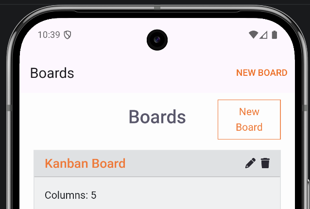
button-component — switch on both Rails and Android repositories.
Enable Modal Navigation
📷 Screenshots: before / after
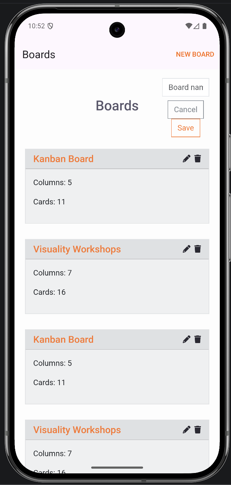
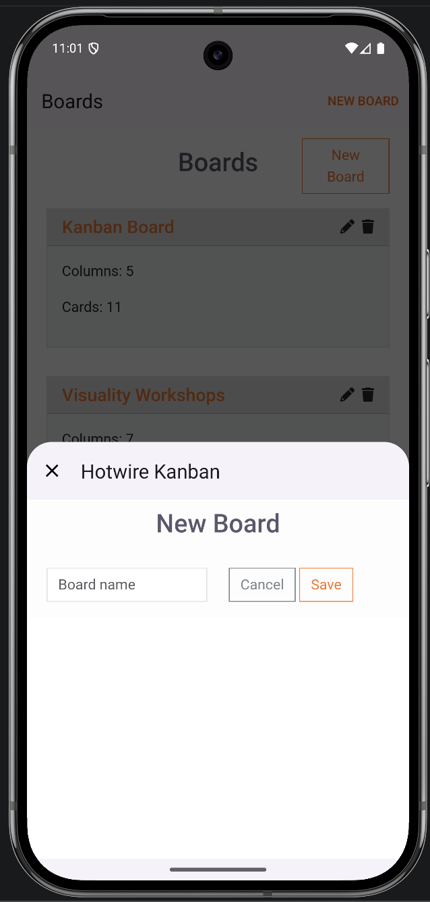
Two changes are needed: use _top to break through the TurboFrame (triggering navigation), and tell the Android app to use a modal for /boards/new.
Rails Open app/views/boards/index.html.erb and update the link:
<%= link_to 'New Board', new_board_path,
class: 'btn btn-outline-primary',
data: {
controller: "bridge--button",
bridge_title: "New Board",
**(turbo_native_app? ? { turbo_frame: "_top" } : {})
} %>Android Open assets/json/path-configuration.json and add a new rule:
{
"patterns": [
"/boards/new$"
],
"properties": {
"context": "modal",
"uri": "hotwire://fragment/web/modal/sheet",
"pull_to_refresh_enabled": false
}
}Hide Redundant HTML Rails
📷 Screenshots: before / after
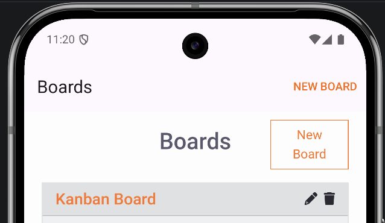
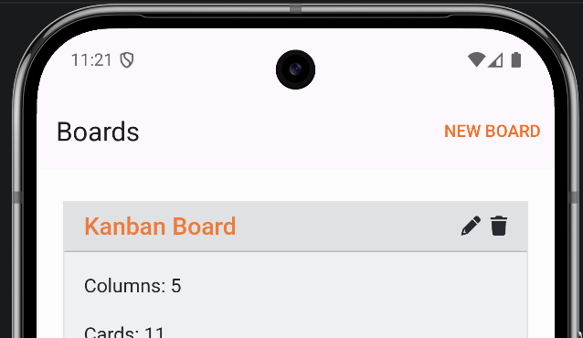
Since native UI replaces the "New Board" button and the page title, hide the web equivalents. Add to app/assets/stylesheets/kanban.scss:
// Hotwire Native: hide elements replaced by native UI
.turbo-native {
// Hide the "New Board" button — replaced by the native toolbar button
[data-controller="bridge--button"] {
display: none;
}
// Hide page headers — title and actions are shown in the native toolbar
.boards-header {
display: none;
}
}The turbo-native class controls CSS differently on web vs. native. Add it to the body in app/views/layouts/application.html.erb (line 25):
<body class="<%= 'turbo-native' if turbo_native_app? %>">Make Modal Dismiss on Submit Rails
📷 Screenshots: before / after
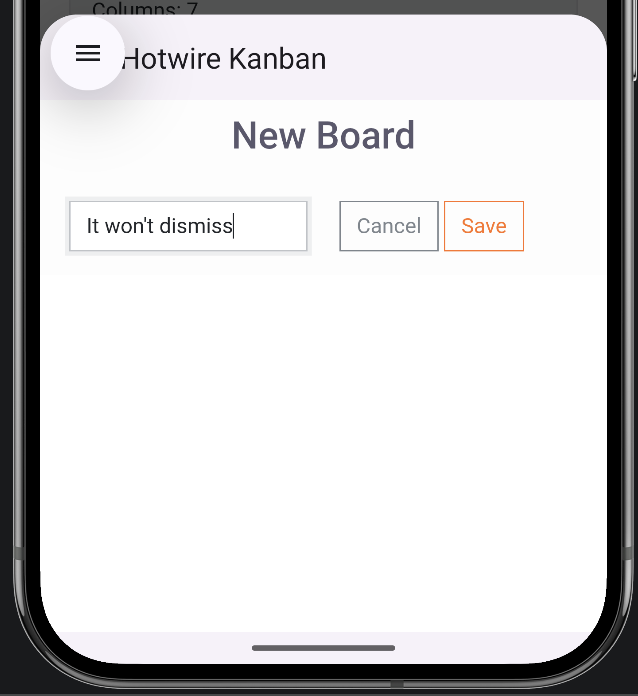
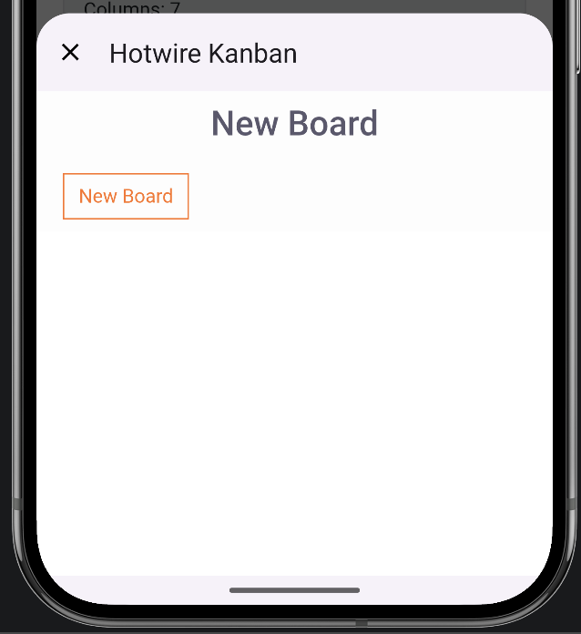
After submitting, the modal stays visible because the server responds with Turbo Streams inside the TurboFrame. To fix this, break through the frame with _top and force the server to respond with a redirect.
Replace line 1 in app/views/boards/_form.html.erb:
<%= form_for @board, class: 'col-12', data: ({ turbo_frame: '_top' } if turbo_native_app?) do |form| %>In app/controllers/boards_controller.rb, add a before action and use a native variant in the create response. We're using Layout Variants — see Rails docs.
before_action :set_native_variant, if: -> { turbo_native_app? }, only: %i[ create ]
private
def set_native_variant
request.variant = :native
enddef create
@board = Board.new(board_params)
respond_to do |format|
if @board.save
format.html { redirect_to boards_url, notice: "Board was successfully created." }
format.turbo_stream.native { redirect_to boards_url }
format.turbo_stream
else
format.html { render :new, status: :unprocessable_entity }
end
end
endFix Board Stacking Android
📷 Screenshot: board stacking issue
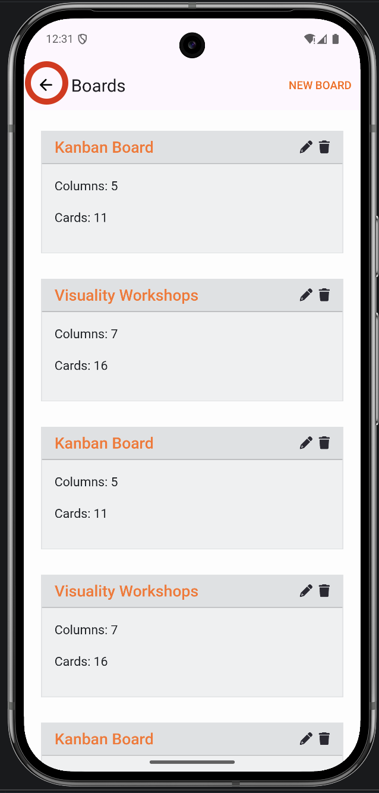
After the modal dismisses, the refreshed boards page is pushed on top of the previous one. Fix this by adding a replace presentation rule in assets/json/path-configuration.json:
{
"patterns": [
"/boards$"
],
"properties": {
"context": "default",
"uri": "hotwire://fragment/web",
"presentation": "replace",
"pull_to_refresh_enabled": true
}
}new-board-modal — switch on both Rails and Android repositories.
Create FormComponent Android
Create a new Kotlin class bridge/FormComponent:
package com.example.hotwirenativeworkshop.bridge
import android.util.Log
import dev.hotwire.core.bridge.BridgeComponent
import dev.hotwire.core.bridge.BridgeDelegate
import dev.hotwire.core.bridge.Message
import dev.hotwire.navigation.destinations.HotwireDestination
import kotlinx.serialization.SerialName
import kotlinx.serialization.Serializable
class FormComponent(
name: String,
private val delegate: BridgeDelegate<HotwireDestination>
) : BridgeComponent<HotwireDestination>(name, delegate) {
override fun onReceive(message: Message) {
when (message.event) {
"connect" -> handleConnectEvent(message)
"submitEnabled" -> handleSubmitEnabled()
"submitDisabled" -> handleSubmitDisabled()
else -> Log.w("FormComponent", "Unknown event for message: $message")
}
}
private fun handleConnectEvent(message: Message) {
val data = message.data<MessageData>() ?: return
showToolbarButton(data)
}
private fun showToolbarButton(data: MessageData) {
// Display a native submit button in the toolbar using data.title
}
private fun handleSubmitEnabled() {
toggleSubmitButton(true)
}
private fun handleSubmitDisabled() {
toggleSubmitButton(false)
}
private fun toggleSubmitButton(enable: Boolean) {
// TODO
}
private fun performSubmit(): Boolean {
return replyTo("connect")
}
@Serializable
data class MessageData(
@SerialName("submitTitle") val title: String
)
}Register FormComponent Android
In KanbanBoardApplication.kt, add FormComponent to the registration list:
Hotwire.registerBridgeComponents(
BridgeComponentFactory("button", ::ButtonComponent),
BridgeComponentFactory("form", ::FormComponent)
)Implement FormComponent Android
Add private properties at the top of the class:
bridge/FormComponent.kt — propertiesprivate val submitButtonItemId = 38
private var submitMenuItem: MenuItem? = null
private val fragment: Fragment
get() = delegate.destination.fragment
private val toolbar: Toolbar?
get() = fragment.view?.findViewById(R.id.toolbar)Replace the showToolbarButton method:
private fun showToolbarButton(data: MessageData) {
val menu = toolbar?.menu ?: return
val order = 999
val title = SpannableString(data.title).apply {
setSpan(ForegroundColorSpan("#FF6600".toColorInt()), 0, length, 0)
}
menu.removeItem(submitButtonItemId)
submitMenuItem = menu.add(Menu.NONE, submitButtonItemId, order, title).apply {
setShowAsAction(MenuItem.SHOW_AS_ACTION_ALWAYS)
setOnMenuItemClickListener {
performSubmit()
true
}
}
}Form Stimulus Controller Rails
Create app/javascript/controllers/bridge/form_controller.js:
import { BridgeComponent } from "@hotwired/hotwire-native-bridge"
import { BridgeElement } from "@hotwired/hotwire-native-bridge"
export default class extends BridgeComponent {
static component = "form"
static targets = [ "submit" ]
connect() {
super.connect()
this.notifyBridgeOfConnect()
}
notifyBridgeOfConnect() {
const submitButton = new BridgeElement(this.submitTarget)
const submitTitle = submitButton.title
this.send("connect", { submitTitle }, () => {
this.submitTarget.click()
})
}
submitStart(event) {
this.submitTarget.disabled = true
this.send("submitDisabled")
}
submitEnd(event) {
this.submitTarget.disabled = false
this.send("submitEnabled")
}
}This controller has a target, so update the form and submit button in app/views/boards/_form.html.erb.
Update the form definition:
app/views/boards/_form.html.erb — form<%= form_for @board,
class: 'col-12',
data: {
controller: "bridge--form",
action: "turbo:submit-start->bridge--form#submitStart turbo:submit-end->bridge--form#submitEnd",
**(turbo_native_app? ? { turbo_frame: "_top" } : {})
} do |form| %>Replace the submit button:
app/views/boards/_form.html.erb — submit button<%= form.submit 'Save',
class: 'btn btn-outline-primary',
data: {
bridge__form_target: "submit",
bridge_title: "Save",
} %>📷 Screenshots: before / after
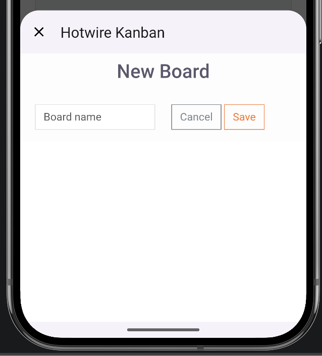
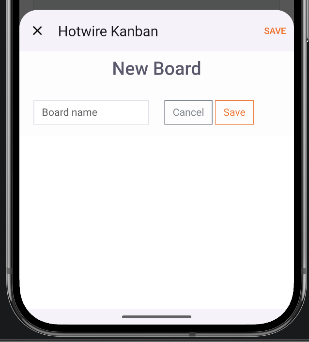
Separate Native View Rails
The form works but looks too web. Instead of adding conditional CSS, create a dedicated native view to keep the code readable.
Create app/views/boards/new.html+native.erb:
<% content_for :title, "New Board" %>
<%= form_for @board,
data: {
controller: "bridge--form",
action: "turbo:submit-start->bridge--form#submitStart turbo:submit-end->bridge--form#submitEnd",
turbo_frame: "_top"
} do |form| %>
<% if @board.errors.any? %>
<% @board.errors.full_messages.each do |message| %>
<p class="text-center text-orange-600"><%= message %></p>
<% end %>
<% end %>
<div class="px-3 py-2">
<%= form.text_field :name, placeholder: 'Board name', class: 'form-control w-100' %>
</div>
<%= form.submit 'Save', class: 'd-none',
data: { bridge__form_target: "submit", bridge_title: "Save" } %>
<% end %>Restore app/views/boards/_form.html.erb to the original web form:
<%= form_for @board, class: 'col-12' do |form| %>
<% if @board.errors.any? %>
<% @board.errors.full_messages.each do |message| %>
<p class="text-center text-orange-600">
<%= message %>
</p>
<% end %>
<% end %>
<div class="row">
<div class="col">
<div class="form-group my-2">
<%= form.text_field :name, placeholder: 'Board name', class: 'form-control' %>
</div>
</div>
<div class="col d-flex align-items-end">
<div class="actions mb-2 text-center">
<%= link_to 'Cancel', boards_path, class: 'btn btn-outline-info' %>
<%= form.submit 'Save', class: 'btn btn-outline-primary' %>
</div>
</div>
</div>
<% end %>In app/controllers/boards_controller.rb, add new to the before action:
before_action :set_native_variant, if: -> { turbo_native_app? }, only: %i[ new create ]📷 Screenshot: redesigned native modal
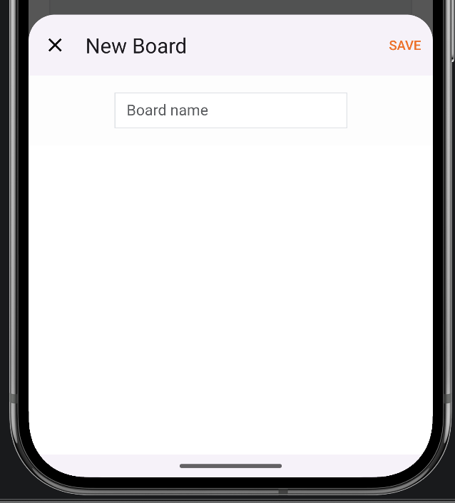
form-component — switch on both Rails and Android repositories.
Further Reading
Official Documentation ↗
Hotwire Native docs — the primary reference
Workshop Rails Repo ↗
The Rails application we'll use during the workshop
Workshop iOS Repo ↗
iOS starter project with Hotwire Native
Workshop Android Repo ↗
Android starter project with Hotwire Native
Hotwire Native by Example ↗
Joe Masilotti's tutorial series — great for post-workshop learning
Ruby Community Conference ↗
Conference schedule, tickets, and other workshops